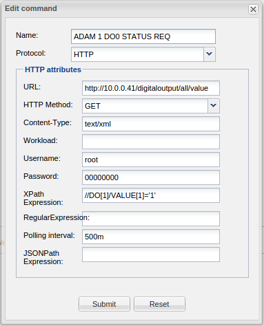
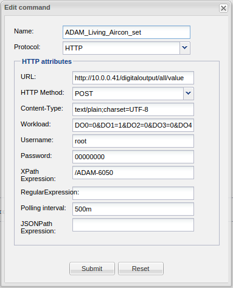
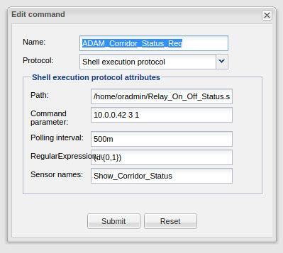

I try connect with modbus plc with tcp\ip command:
i send this command: 0x000000000006010600100001 but don't work.
I try this command ( 000000000006010600100001 ) with modbus master tester and it work.
Can sameone help me?
{kind=link}
{kind=link}
{kind=link}
{kind=link}
{kind=link}
{kind=link}
{kind=link}
{kind=link}
{kind=link}
{kind=link}
{kind=link}
{kind=link}
{kind=link}
|
Hi, I did not try it before but I am interest in this topic too. Can you give me more information ? |
|
Which version of the controller did you use? |
|
Can I understand that the 2.0.2 version currently under Controller download does not support Hex HTTP commands? |
|
You can download the latest development snapshot here: http://download.openremote.org/2.1-DeveloperRelease The change notes are here: CHANGES.txt Controller 2.1.0 (2013-XX-XX Twin Galaxies)
===========================================
New Features:
- WebConsole upgraded to version 2.1.1, fixes issues with stuck
loading screen (Richard Turner, ORCJAVA-345)
- Added DSC-IT 100 Security System integration - IP to serial (Greg Rapp)
- Lagarto server (panStamps) integration (Daniel Berenguer)
- Support 'custom' sensor types with virtual commands (ORCJAVA-217)
- KNX: added distinct levels for 'DIM' and 'SCALE' commands that allow
set values to be configured for buttons, e.g. 'DIM 50' to dim directly
to 50% (Eric Bariaux, ORCJAVA-71).
- HTTP protocol: methods GET, POST, PUT and DELETE are now supported.
For HTTP/JSON return documents, a JSON Path expression is supported.
For outgoing HTTP request, a user agent header is included which
contains 'OpenRemoteController' as agent value which HTTP applications
can use to identify requests originating from the controller.
Internally, the implementation has been converted to use URIs instead
of URLs which resolves an issue with lack of encoding of HTTP parameters
which contain which contain white spaces or other special characters
(Marcus Redeker)
- One Wire: Added possibility to specify temperature values in
either Celsius (default), Kelvin, Fahrenheit or Rankine scales, data
property added for sending values to switches (Marcus Redeker)
- Shell Command Execution: polling interval and regular expression
filtering on return values supported, including regexp groups to
read in multiple sensor values at once. Support for using shell
commands with sliders added (Marcus Redeker, Ivan Martinez)
- Telnet: polling interval property added (Marcus Redeker), dedicated
telnet log directory and telnet debug logs added (Juha Lindfors, ORCJAVA-328)
- Date/Time : values updated once per minute instead of once per second
(Marcus Redeker)
- UDP : send hex values by prefixing command data with '0x' string.
Receiving of UDP packets added (Marcus Redeker)
- TCP : send hex values by prefixing command data with '0x' string
(Marcus Redeker)
- Samsung SmartTV : support control of multiple Samsung devices in single
installation (Ivan Martinez)
- Touch panel gestures can now be bound to macros in addition to individual
commands (Eric Bariaux, ORCJAVA-231)
- Color selection widget is now supported by the controller (Eric Bariaux,
ORCJAVA-235)
- Direct Tomcat container logging to /logs/container/tomcat-server.log
(Tomcat server logging) and /logs/container/appcontext.log (Controller
web application logging) files, and output directed to standard output
and error streams to /logs/container/stderrout.log -- catalina.out is
no longer created (Juha Lindfors, ORCJAVA-273)
- Adjusted 'start' and 'run' targets of openremote.sh to configure default
standard output console logging differently -- 'run' target will still
output logs to console where as 'start' target will redirect all logging
to files (Juha Lindfors, ORCJAVA-273)
Bug Fixes:
- Performance fix to sensor state cache queries (Marcus Redeker)
- Runtime performance optimization to avoid unnecessary XML
parsing/XPath use (ORCJAVA-190)
- Fix for JSON REST request return values (Richard Turner, ORCJAVA-254)
- Rework logout requests and added CORS headers (Richard Turner, ORCJAVA-255)
- Internal API : concurrency and call control on Deployer start
controller calls (Juha Lindfors, ORCJAVA-179)
- Range and Level sensors trim the incoming values from protocol implementation
before attempting to convert values to numbers (Eric Bariaux, ORCJAVA-261)
- Fix issues with installing Controller to a file system location that contained
white spaces in path names - commonly 'Program Files' on Windows environments
(Juha Lindfors ORCJAVA-280, ORCJAVA-263, ORCJAVA-286, Eric Bariaux ORCJAVA-311)
- Fix a false warning in ISY-99 protocol implementation
(Juha Lindfors, ORCJAVA-308)
- State sensor is more tolerant to device input trimming non-printable
characters -- CF, RF, zero bytes, etc. (Juha Lindfors, ORCJAVA-324)
- Use locale independent string case conversions in the controller, KNX and telnet
protocols (Juha Lindfors, ORCJAVA-332, ORCJAVA-334, ORCJAVA-335)
- Fix a bug in telnet switch sensor handling where untrimmed return value was
never correctly parsed to 'on' state (Juha Lindfors, ORCJAVA-326)
Internal:
- Enforce UTF-8 encoding on Java source files with javac to prevent build issues
on systems with differing default character encoding configurations
(Juha Lindfors, ORCJAVA-329)
|
|
I think HEX is not supported with HTTP only TCP. |
|
What about documentaion of some sort? |
|
Hi again. I have been investigating the ModBus issue. I have used the Advantech tools for the ADAM-6050 along with Wireshark to understand the actual TCP activity. The results under OR are (to my opinion):
I guess a Java ModBus is the only solution and since my Java skills are low I will have to wait or dig deeper. |
|
Nir Aviry Were you ever able to get your Advantech working with Openremote? I just picked up an Adam-6052 and am trying to experiment with it. If you have any more findings can you pass them on Thanks |
|
Back to Modbus after a long time. http://10.0.0.41/digitaloutput/all/value http://10.0.0.41/digitalinput/all/value The GET is for both while the POST is for the Digitaloutput. Along with that is a plain text workload: DO0=0&DO1=0&DO2=0&DO3=0&DO4=0&DO5=0 The ADAM-6050 is an Ethernet ModBus/TCP based device with 6 Relay and 12 Digital inputs. <?xml version=\"1.0\" ?> <ADAM-6050 status="OK"> </ADAM-6050> This is a fairly good starting point. |
|
Thats great....I am in the middle of programming my system, I will have to pull my ADAM I/O out and do some testing Keep posting any results you get Thanks |
|
I did some XPath using a web tester. The responce is XML but from some reason the query of the XPath tester does not function as I have expected. I will use it after the XP shell be understood. |
|
Good news (Update - not there yet but close). As I have posted, when loading the ADAM CE series units with HTTP firmware the ADAM units responce to XML through HTTP POST and GET. The GET functionality using XPATH should look like this (Read status request and responce):  The corresponding Controller.XML code looks like this: <command id="3122" protocol="http"> <property name="username" value="root" /> <property name="pollingInterval" value="500m" /> <property name="method" value="GET" /> <property name="contentType" value="text/xml" /> <property name="password" value="00000000" /> <property name="url" value="http://10.0.0.41/digitaloutput/all/value" /> <property name="xpath" value="//DO[1]/VALUE[1]='1'" /> <property name="name" value="ADAM 1 DO0 STATUS REQ" /> </command> The result is binary (true / false) as tested using a web tester called XPATH Tester. The Relay Control contains 7 commands: 6 for setting each of the 6 Relays and one for Ressting them all. The reason is that my control The Designer (July 2013 snapshot) looksline this:  But the corresponding XML code looks like this: <command id="3124" protocol="http"> <property name="workload" value="DO0=0&DO1=1&DO2=0&DO3=0&DO4=0&DO5=0" /> <property name="username" value="root" /> <property name="pollingInterval" value="500m" /> <property name="method" value="POST" /> <property name="contentType" value="text/plain;charset=UTF-8" /> <property name="password" value="00000000" /> <property name="url" value="http://10.0.0.41/digitaloutput/all/value" /> <property name="xpath" value="/ADAM-6050" /> <property name="name" value="ADAM_Living_Aircon_set" /> </command> As you can see & instead of & (the workload string is: DO0=0&DO1=0&DO2=0&DO3=0&DO4=0&DO5=0). I am not shure it is correct as this is a plain text. I used only one sensor to test the setup which checks the Relay status. WhatI get is the following error: ERROR [Polling thread for sensor: Test]: ClientProtocolException when executing HTTP method org.apache.http.client.HttpResponseException: Forbidden at org.apache.http.impl.client.BasicResponseHandler.handleResponse(BasicResponseHandler.java:67) at org.apache.http.impl.client.BasicResponseHandler.handleResponse(BasicResponseHandler.java:54) at org.apache.http.impl.client.AbstractHttpClient.execute(AbstractHttpClient.java:735) at org.apache.http.impl.client.AbstractHttpClient.execute(AbstractHttpClient.java:709) at org.apache.http.impl.client.AbstractHttpClient.execute(AbstractHttpClient.java:700) at org.openremote.controller.protocol.http.HttpGetCommand.requestURL(HttpGetCommand.java:231) at org.openremote.controller.protocol.http.HttpGetCommand.run(HttpGetCommand.java:245) at java.lang.Thread.run(Thread.java:662) INFO 2015-06-27 18:29:40,991 : Registered sensor : Switch Sensor (Name = 'Study Desk Light Panel Status', ID = '100057353') [Fatal Error] :1:1: Premature end of file. ERROR [Polling thread for sensor: Test]: Could not perform xpath evaluation org.xml.sax.SAXParseException: Premature end of file. at com.sun.org.apache.xerces.internal.parsers.DOMParser.parse(DOMParser.java:246) at com.sun.org.apache.xerces.internal.jaxp.DocumentBuilderImpl.parse(DocumentBuilderImpl.java:284) at javax.xml.parsers.DocumentBuilder.parse(DocumentBuilder.java:124) at org.openremote.controller.protocol.http.HttpGetCommand.run(HttpGetCommand.java:267) at java.lang.Thread.run(Thread.java:662) This error appears both in HTTP GET for DI which seems to be OK from the Controller.XML code and the GET DO which looks suspicious. I have also noticed that the Wireshark URI appears like this: "10.0.0.41/digitaloutput/all/value HTTP/1.1" (" are not part of the URI). The request version does not appear in any place in the HTTP command. Also the referer looks like this: "http://10.0.0.41/login.cgi\r\n" The \r\n - (CR) (LF) appears in many of the fields in the messages I see in the Wireshark and I am also not sure I need to add them in the Designer or not. There are posts about (CR) & (LF) regarding the TCP and UDP but not HTTP. BTW, removing the user and password does not change any of the above. This is why I am not sure the URL in the designer is OK. Can anyone help. Thanks |
|
As I had no time to try and investigate why the HTTP version does not work, I left it aside till few days back. I found a command line application running on most platforms -modpoll. Using this utility I was able to sense and control my Modbus devices. |
|
After integrating most of my devices it looks like it is working great. |
|
Hi Nir, did you indeed get modbus to work? It would be great if we can create some documentation on that... |
|
Well i need to do some more tweaking since the sensors return values do not function properly under OR but I am optimistic. |
|
Sounds like a plan |
|
I might be needing some help to resolve to sensor issue. #!/bin/sh # $1 is ADAM IP, $2 is Channel number 1-12 are input, 17 to 22 are Relay output. # $3 is expected vlaue 0 or 1 # Respnce will return 1 if discrete matches $3, 0 if not matches $3 and 2 if communication error occured. modbus_io="$(modpoll -m tcp $1 -r $2 -c 1 -t 0 -1 | tail -1)" modbus="$(echo $modbus_io | cut -c $((${#modbus_io})))" if [ $modbus -gt 1 ] then echo communication error exit 2 fi if [ $modbus -eq $3 ] then echo responce match exit 1 else echo responce missmatch exit 0 fi The sensor looks like this:  I also enabled the shell command logging as instructed in the forum but it is not in the log directory so I can't debug. I assume ) and 1 are translated in to on and off of a switch which I have used. At this point I get no responce from the sensor on the screen. The bash file works OK. I am not sure if I should move to custom sensor instead of a switch to solve the problem. |
|
Finally I got the Modbus and for a matter of fact any other command line based protocol or utility working perfectly. |
|
This is an add on information to ModBus and Shell execution Protocol. This post extends the information about the implementation of the two subjects. There are few rules to follow to make things running:
Note: I managed to enable the shall logging only under the last version of the Linux OR (2.1.1 from Feb 2015). #!/bin/sh # The is Relay_On.sh script file # Set Relay 0 to 5 to On (short state). # $1 is ADAM IP address, $2 is Channel number 1-12 are input so do not use, 17 to 22 are Relay output. modpoll -m tcp $1 -r $2 -c 1 -t 0 -1 1 > /dev/null # echo "Relay" $2 "On" $1 "was set to On" See the > /dev/null. It is designed to prevent the OR sensor from seeing undesiered text that shall be interpreted wrongly. #!/bin/sh # The is Relay_Off.sh script file # Set Relay 0 to 5 to On (short state). # $1 is ADAM IP address, $2 is Channel number 1-12 are input so do not use, 17 to 22 are Relay output. modpoll -m tcp $1 -r $2 -c 1 -t 0 -1 0 > /dev/null # echo "Relay" $2 "On" $1 "was set to Off" Ofcoarse one can combine two or more commands to do the correct task. The sensor script looks like this: #! /bin/sh # This is Relay_On_Off_Status.sh file # $1 is ADAM IP, $2 is Channel number 1-12 are input, 17 to 22 are Relay output. # $3 is expected vlaue 0 or 1 # Respnce will return 1 if discrete matches $3, 0 if not matches $3 and 2 if communication error occured. # ech off modbus_io="$(modpoll -l 250 -m tcp $1 -r $2 -c 1 -t 0 -1 | tail -1)" modbus="$(echo $modbus_io | cut -c $((${#modbus_io})))" # if [ $modbus -gt 1 ] # then # echo communication error # exit 2 # fi if [ $modbus -eq $3 ] then echo on exit else echo off exit fi # echo "Status bit" $2 "on" $1 "was tested!" Regex above is to use different values per each sensor to lower the load over the net. I have set it to about 1.1 seconds with 20mSec difference between the set of sensors. ADAM devices have 12 bit of Digital Input (1 to 12) and 6 Digital Outputs (17 to 22). This will help you understand the commands for the TCP ModBus device. Last thing, as you can see, one can arrange the proper parameters according to the device / protocol being used. I hope I did not miss anything. My next project is implementing a Modbus Energy meter including events logging (out of range voltage etc.). |
|
Hi, |
|
Interesting to see that Nir had the same problem with http authentication as I encountered. So would be nice if he could give the http thing one more try with Pro version 1.2 (If he has that) A side remark on Modbus. Industry is still soaked in that protocol. Not rocket science, but very reliable in hersh envrionments. Because of Nir's search I could make someone very happy with a link to modpoll (which is open source and easy to compile on different platforms I understood) |
|
Well I even did not compile it. I have simply downloded the Linux version run file, lookup for some examples and after a hour I had bash files working simply under Linux. |
But my friend was happy he could compile for his platform! And it makes your Modbus solution more generic.
I'am well aware of that. I do understand that you choose not to use the pro version. Would have been a nice test opportunity if you had it. |
|
Hi, nice progress |
|
Regarding HTTP and authentication you can follow the discussion here: www.openremote.org/pages/viewpage.action?pageId=23601288 |
|
Yes, I continued in that thread |
|
Hi. Sorry for the delay with testing the ModBus with HTTP. I have repeated the ADAM test with HTTP. I t shows about the same results on the Pro 1.3 version. I have tested my ADAM device in two configuration as was posted in the above in this post (with and without user and password). With no user and password I get the following errors: ERROR [Polling Sensor Thread ID = 250156, Name ='AirCon Test Sensor']: ClientProtocolException when executing HTTP method org.apache.http.client.HttpResponseException: Object Not Found at org.apache.http.impl.client.BasicResponseHandler.handleResponse(BasicResponseHandler.java:67) at org.apache.http.impl.client.BasicResponseHandler.handleResponse(BasicResponseHandler.java:54) at org.apache.http.impl.client.AbstractHttpClient.execute(AbstractHttpClient.java:735) at org.apache.http.impl.client.AbstractHttpClient.execute(AbstractHttpClient.java:709) at org.apache.http.impl.client.AbstractHttpClient.execute(AbstractHttpClient.java:700) at org.openremote.controller.protocol.http.HttpGetCommand.requestURL(Unknown Source) at org.openremote.controller.protocol.http.HttpGetCommand.read(Unknown Source) at org.openremote.controller.model.sensor.Sensor$DeviceReader.read(Unknown Source) at org.openremote.controller.model.sensor.Sensor$DeviceReader.run(Unknown Source) at java.lang.Thread.run(Thread.java:745) [Fatal Error] :1:1: Premature end of file. ERROR [Polling Sensor Thread ID = 250156, Name ='AirCon Test Sensor']: Could not perform xpath evaluation org.xml.sax.SAXParseException; lineNumber: 1; columnNumber: 1; Premature end of file. at com.sun.org.apache.xerces.internal.parsers.DOMParser.parse(DOMParser.java:257) at com.sun.org.apache.xerces.internal.jaxp.DocumentBuilderImpl.parse(DocumentBuilderImpl.java:338) at javax.xml.parsers.DocumentBuilder.parse(DocumentBuilder.java:121) at org.openremote.controller.protocol.http.HttpGetCommand.read(Unknown Source) at org.openremote.controller.model.sensor.Sensor$DeviceReader.read(Unknown Source) at org.openremote.controller.model.sensor.Sensor$DeviceReader.run(Unknown Source) at java.lang.Thread.run(Thread.java:745) The project is tiny and the object exists. If I put the login user and password (which do not appear in the Wireshark recording) I get about the same but one or two times I got an error As for the errors: 1. It looks to me that the 1st thing that bugs this one is the "//" at the Xpath Expression. http://www.freeformatter.com/xpath-tester.html I have no idea what is wrong unless OR canot cope with such a condition. The xml responce looks like this: <?xml version="1.0" encoding="UTF-8"?> <ADAM-6050 status="OK"> <DI> <ID>0</ID> <VALUE>0</VALUE> </DI> <DI> <ID>1</ID> <VALUE>1</VALUE> </DI> <DI> <ID>2</ID> <VALUE>1</VALUE> </DI> <DI> <ID>3</ID> <VALUE>1</VALUE> </DI> <DI> <ID>4</ID> <VALUE>1</VALUE> </DI> <DI> <ID>5</ID> <VALUE>1</VALUE> </DI> <DI> <ID>6</ID> <VALUE>1</VALUE> </DI> <DI> <ID>7</ID> <VALUE>1</VALUE> </DI> <DI> <ID>8</ID> <VALUE>1</VALUE> </DI> <DI> <ID>9</ID> <VALUE>1</VALUE> </DI> <DI> <ID>10</ID> <VALUE>1</VALUE> </DI> <DI> <ID>11</ID> <VALUE>1</VALUE> </DI> </ADAM-6050> 2 As for the "object not found" error, I have no idea what is the problem. If someone wants me to send him the Wireshark file I will be happy to do so. I hope there is a solution. Thanks, Nir |
|
I gave up since both Marcus and the ZWay guys say the other side is wrong. I honestly don't know who is right. Marcus has answered all my questions, but the Zway people have choosen not to respond to my final question..... |
|
Nir, 1) Our library first needs a 401 Unauthorized response before sending the authentication information. 2) I cannot find the "Object not found" being part of our HTTP library. This sees to be a error from your side. Can you verify these 2 issues with wireshark? |
|
I had hoped that the latest ZWay release (2.1.2-rc17) had changed a bit on their side (release notes say nothing about it). I see no change. Maybe tomorrow I find the time to run the TCPDUMP once more. |
|
Still problematic in v2.1.2-rc17. DS212> tcpdump -A -v -s 10240 'tcp port 8083 and (((ip[2:2] - ((ip[0]&0xf)<<2)) - ((tcp[12]&0xf0)>>2)) != 0)'
tcpdump: listening on eth0, link-type EN10MB (Ethernet), capture size 10240 bytes
15:38:44.400120 IP (tos 0x0, ttl 64, id 53660, offset 0, flags [DF], proto TCP (6), length 217)
DS212.56798 > raspberry.fritz.box.8083: Flags [P.], cksum 0x8459 (incorrect -> 0x73aa), seq 785799336:785799501, ack 3299199293, win 183, options [nop,nop,TS val 191007037 ecr 51423], length 165
E.....@.@......!..........X....=.....Y.....
.b.=....GET /OpenRemote/SwitchBinaryStatus/9/0 HTTP/1.1
User-Agent: OpenRemoteController
Content-Type: application/json
Host: raspberrypi:8083
Connection: Keep-Alive
15:38:44.425443 IP (tos 0x0, ttl 64, id 483, offset 0, flags [DF], proto TCP (6), length 269)
raspberry.fritz.box.8083 > DS212.56798: Flags [P.], cksum 0x75ba (correct), seq 1:218, ack 165, win 470, options [nop,nop,TS val 51425 ecr 191007037], length 217
..@.@..z.......!.......=..YM....u......
.....b.=HTTP/1.1 401 Unauthorized
Connection: close
Access-Control-Allow-Origin: *
Access-Control-Allow-Credentials: true
Content-Type: text/plain
Content-Length: 13
Transfer-Encoding: chunked
D
Not logged in
0
Looks to me like ZWay properly returns 401, but I do not see OR sending the request with usr/pwd then. The pattern above just repeats every 2seconds as defined by me in the http command. |
|
I will try this weekend. |
|
It has become pretty clear to Marcus and me that the problem I reported is on the ZWay side. So as far as I am concerned this issue is closed. |
|
Hi all. my questions : 1. does 56 switches that runs powershell script are too much? please advise |
|
Hi Nitzan. I use 2 ADAM devices with 6 DO and 12 DI each. I use some of them. In order to spread the activity I keep a kind of order of polling que by setting differnt polling time. This way I have one at the time polling. The modpoll has timing parameter. |
|
Nir , thanks. |